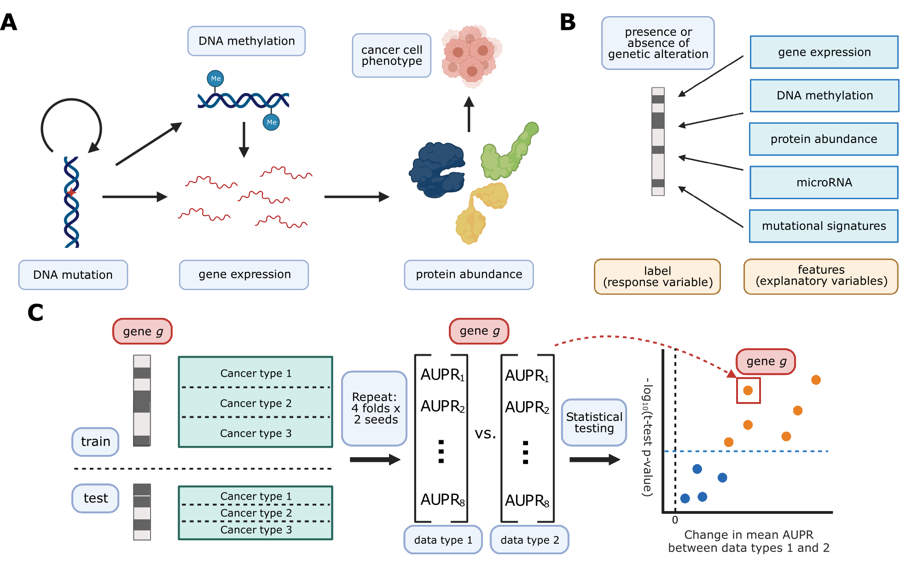
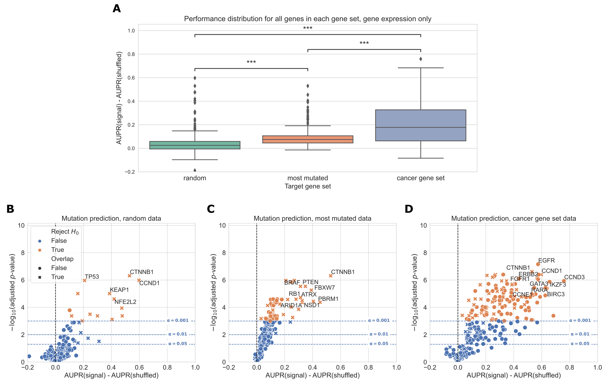
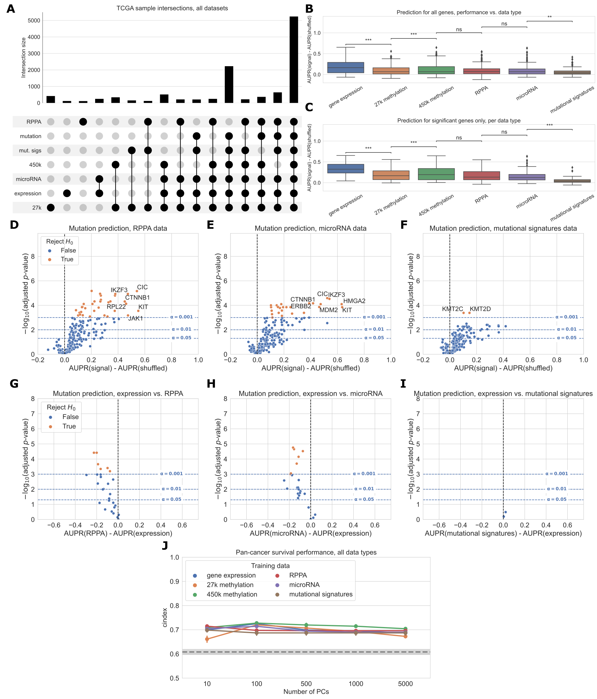

Jane Roe XXXX-XXXX-XXXX-XXXX
· janeroe
Department of Something, University of Whatever; Department of Whatever, University of Something
Abstract
Introduction
Although cancer can be initiated and driven by many different genetic alterations, these tend to converge on a limited number of pathways or signaling processes [1].
A comprehensive understanding of how diverse genetic alterations perturb these central pathways is vital to precision medicine and biomarker identification efforts, as driver mutation status alone confers limited prognostic information [2,3].
While many methods exist to distinguish driver mutations from passenger mutations based on genomic sequence characteristics [4,5,6], until recently it has been a challenge to connect driver mutations to downstream changes in gene expression and cellular function within individual tumor samples.
The Cancer Genome Atlas (TCGA) Pan-Cancer Atlas provides uniformly processed, multi-platform -omics measurements across tens of thousands of samples from 33 cancer types [7].
Enabled by this publicly available data, a growing body of work on linking the presence of driving genetic alterations in cancer to downstream gene expression changes has emerged.
Recent studies have considered Ras pathway alteration status in colorectal cancer [8], alteration status across many cancer types in Ras genes [9,10], TP53 [11], and PIK3CA [12], and alteration status across cancer types in frequently mutated genes [13].
More broadly, other groups have drawn on similar ideas to distinguish between the functional effects of different alterations in the same driver gene [14], to link alterations with similar gene expression signatures within cancer types [15], and to identify trans-acting expression quantitative trait loci (trans-eQTLs) in germline genetic studies [16].
These studies share a common thread: they each combine genomic (point mutation and copy number variation) data with transcriptomic (RNA sequencing) data within samples to interrogate the functional effects of genetic variation.
RNA sequencing is ubiquitous and cheap, and its experimental and computational methods are relatively mature, making it a vital tool for generating insight into cancer pathology [17].
Some driver mutations, however, are known to act indirectly on gene expression through varying mechanisms.
For example, oncogenic IDH1 and IDH2 mutations in glioma have been shown to interfere with histone demethylation, which results in increased DNA methylation and blocked cell differentiation [18,19].
Other genes implicated in aberrant DNA methylation in cancer include the TET family of genes [20] and SETD2 [21].
Certain driver mutations, such as those in DNA damage repair genes, may lead to detectable patterns of somatic mutation [22].
Additionally, correlation between gene expression and protein abundance in cancer cell lines is limited, and proteomics data could correspond more directly to certain cancer phenotypes and pathway perturbations [23].
In these contexts and others, integrating different data modalities or combining multiple data modalities could be more effective than relying solely on gene expression as a functional signature.
Here, we seek to compare -omics data types profiled in the TCGA Pan-Cancer Atlas for use as a multivariate functional readout of genetic alterations in cancer.
We focus on DNA methylation (27K and 450K probe chips), reverse phase protein array (RPPA), and mutational signatures data [24] as alternative readouts.
Prior studies have identified univariate correlations of CpG site methylation [25,26] and correlations of RPPA protein profiles [27] with the presence or absence of certain driver mutations.
Other relevant past work includes linking point mutations and copy number variants (CNVs) with changes in methylation and expression at individual genes [28,29] and identifying functional modules that are perturbed by somatic mutations [30,31].
However, no direct comparison has been made between different data types for this application, particularly in the multivariate case where we consider changes to -omics-derived gene signatures rather than individual genes in isolation.
We select a wide-ranging collection of potential cancer drivers with varying functions and roles in cancer development [32].
We use mutation status in these genes as labels to train classifiers, using each of the data types listed as training data, in a pan-cancer setting; we follow similar methods to the elastic net logistic regression approach described in Way et al. 2018 [9] and Way et al. 2020 [13].
We show that although there is considerable predictive signal for many genes in each dataset relative to a random baseline, gene expression data tends to provide more effective predictions than the other data types in the vast majority of cases.
In addition, we observe that combining data types into a single multi-omics model provides little, if any, performance benefit over the most performant model using a single data type.
Our results will help to inform the design of future functional genomics studies in cancer, suggesting that RNA sequencing can serve as a broadly effective first-line readout for a variety of genetic alterations.
Methods
Mutation data download and preprocessing
To generate binary mutated/non-mutated gene labels for our machine learning model, we used mutation calls for TCGA samples from MC3 [33] and copy number threshold calls from GISTIC2.0 [34].
MC3 mutation calls were downloaded from the Genome Data Commons (GDC) of the National Cancer Institute, at https://gdc.cancer.gov/about-data/publications/pancanatlas.
Copy number threshold calls are from an older version of PanCanAtlas, and are available here: https://figshare.com/articles/dataset/TCGA_PanCanAtlas_Copy_Number_Data/6144122.
We removed hypermutated samples (defined as five or more standard deviations above the mean non-silent somatic mutation count) from our dataset to reduce the number of false positives (i.e., non-driver mutations).
In total, this resulted in 9,074 TCGA samples with mutation and copy number data.
Any sample with a non-silent somatic variant in the target gene was included in the positive set.
We also included copy number gains in the target gene for oncogenes, and copy number losses in the target gene for tumor suppressor genes, in the positive set; all remaining samples were considered negative for mutation in the target gene.
Omics data download and preprocessing
RNA sequencing, 27K and 450K methylation array, and RPPA datasets for TCGA samples were all downloaded from GDC, at the same link provided above.
Mutational signatures information for TCGA samples with whole-exome sequencing data was downloaded from the International Cancer Genome Consortium (ICGC) data portal, at https://dcc.icgc.org/releases/PCAWG/mutational_signatures/Signatures_in_Samples/SP_Signatures_in_Samples.
For our experiments, we used only the “single base signature” (SBS) mutational signatures, generated in [24].
We standardized (took z-scores of) each column of RNA sequencing and RPPA data; methylation data and mutational signatures data were left untransformed (beta values and mutation counts respectively), except in multi-omics experiments where all data types were standardized.
For the RNA sequencing dataset, we used only the top 8,000 gene features by mean absolute deviation as predictors in our models, except in multi-omics experiments where all 15,639 genes were used.
In order to remove missing values from the methylation datasets, we removed the 10 samples with the most missing values, then performed mean imputation for probes with 1 or 2 values missing.
All probes with missing values remaining after sample filtering and imputation were dropped from the analysis.
This left us with 20,040 CpG probes in the 27K methylation dataset, and 370,961 CpG probes in the 450K methylation dataset.
For experiments where “raw” methylation data was used, we used the top 100,000 probes in the 450K dataset by mean absolute deviation for computational efficiency, and we used all of the 20,040 probes in the 27K dataset.
For experiments where “compressed” methylation data was used, we used principal component analysis (PCA), as implemented in the scikit-learn Python library [35], to extract the top 5,000 principal components from the methylation datasets.
We initially applied the beta-mixture quantile normalization (BMIQ) method [36] to correct for variability in signal intensity between type I and type II probes, but we observed that this had no effect on our results.
We report uncorrected results in the main paper for simplicity.
To make a fair comparison in each of the experiments displayed in the results, we used the intersection of TCGA samples having measurements for all of the datasets being compared in that experiment.
This resulted in 3 distinct sets of samples: 9,074 samples shared between {expression, mutation} data, 7,981 samples shared between {expression, mutation, 27K methylation, 450K methylation}, and 5,282 samples shared between {expression, mutation, 27K methylation, 450K methylation, RPPA, mutational signatures}.
When we dropped samples between experiments as progressively more data types were added, we observed that the dropped samples had approximately the same cancer type proportions as the dataset as a whole.
In other words, samples that were profiled for one data type but not another did not tend to come exclusively from one or a few cancer types.
Exceptions included acute myeloid leukemia (LAML) which had no samples profiled in the RPPA data, and ovarian cancer (OV) which had only 8 samples with 450K methylation data.
More detailed information on cancer type proportions profiled for each data type is provided in (the supplement).
Training classifiers to detect cancer mutations
We trained logistic regression classifiers to predict whether or not a given sample has a mutational event in a given target gene, using data from various -omics datasets as explanatory variables.
We explored mutation prediction from gene expression alone using 3 gene sets of equal size: a cancer-related gene dataset of 124 genes described in Vogelstein et al. 2013 [32], the most mutated genes in TCGA in descending order, and a set of random genes with mutations profiled by MC3.
For each target gene, in order to ensure that the training dataset was reasonably balanced (i.e. that there would be enough mutated samples to train a classifier), we included only cancer types with at least 15 mutated samples and at least 5% mutated samples.
After filtering for sufficient mutated samples, 17 of the genes from the Vogelstein et al. gene set had no valid cancer types remaining, leaving 107 genes with one or more valid cancer types to use in further analyses.
To match the size of this gene set, we took the 107 most frequently mutated genes in TCGA as quantified by MC3, all of which had at least one valid cancer type.
For our random gene set, we first filtered to the set of all genes with 2 or more valid cancer types by the above criteria, then sampled 107 of these genes uniformly at random.
Based on the results of the gene expression experiments, we used the Vogelstein et al. cancer gene set for all subsequent experiments comparing -omics data types.
Our model is trained on -omics data (\(X\)) to predict mutation presence or absence (\(y\)) in a target gene.
To control for varying mutation burden per sample, and to adjust for potential cancer type-specific expression patterns, we included one-hot encoded cancer type and log10(sample mutation count) in the model as covariates.
Since our -omics datasets tend to have many dimensions and comparatively few samples, we used logistic regression with an elastic net penalty to prevent overfitting [37], in line with the approach used in Way et al. 2018 [9] and Way et al. 2020 [13].
Elastic net logistic regression finds the feature weights \(\hat{w} \in \mathbb{R}^{p}\) solving the following optimization problem: \[\hat{w} = \text{argmin}_{w} \ \ell(X, y; w) + \alpha \lambda||w||_1 + \frac{1}{2}\alpha (1 - \lambda) ||w||_2\]
where \(i \in \{1, \dots, n\}\) denotes a sample in the dataset, \(X_i \in \mathbb{R}^{p}\) denotes features (omics measurements) from the given sample, \(y_i \in \{0, 1\}\) denotes the label (mutation presence/absence) for the given sample, and \(\ell(\cdot)\) denotes the negative log-likelihood of the observed data given a particular choice of feature weights, i.e. \[\ell(X, y; w) = -\sum_{i=1}^{n} y_i \log\left(\frac{1}{1 + e^{-w^{\top}X_i}}\right) + (1 - y_i) \log\left(1 - \frac{1}{1 + e^{-w^{\top}X_i}}\right)\]
This optimization problem leaves two hyperparameters to select: \(\alpha\) (controlling the tradeoff between the data log-likelihood and the penalty on large feature weight values), and \(\lambda\) (controlling the tradeoff between the L1 penalty and L2 penalty on the weight values).
Although the elastic net loss function does not have a closed form solution, it is convex, and iterative optimization algorithms are commonly used for finding reasonable solutions.
For fixed values of \(\alpha\) and \(\lambda\), we solved for \(\hat{w}\) using stochastic gradient descent, as implemented in scikit-learn’s SGDClassifier method.
Given weight values \(\hat{w}\), it is straightforward to predict the probability of a positive label (mutation in the target gene) \(P(y^{*} = 1 \mid X^{*}; \hat{w})\) for a test sample \(X^{*}\): \[P(y^{*} = 1 \mid X^{*}; \hat{w}) = \frac{1}{1 + e^{-\hat{w}^{\top}X^{*}}}\]
and the probability of no mutation in the target gene, \(P(y^{*} = 0 \mid X^{*}; \hat{w})\), is given by (1 - the above quantity).
For each target gene, we evaluated model performance using 2 replicates of 4-fold cross-validation, where train and test splits were stratified by cancer type and sample type.
That is, each training set/test set combination had equal proportions of each cancer type (BRCA, SKCM, COAD, etc) and each sample type (primary tumor, recurrent tumor, etc).
To choose the elastic net hyperparameters, we used 3-fold nested cross-validation, with a grid search over the same hyperparameter ranges used in Way et al. 2020 [13]: \(\lambda\) = [0.15, 0.16, 0.2, 0.25, 0.3, 0.4] and \(\alpha\) = [0.1, 0.13, 0.15, 0.2, 0.25, 0.3].
Using the grid search results, for each evaluation fold we selected the set of hyperparameters with the optimal area under the receiver-operator curve (AUROC), averaged over the three inner folds.
Evaluating mutation prediction classifiers
To quantify classification performance for a continuous or probabilistic output, such as that provided by logistic regression, the area under the receiver-operator curve (AUROC) [38] and the area under the precision-recall curve (AUPR) [39] metrics are frequently used.
These metrics summarize performance across a variety of binary label thresholds, rather than requiring choice of a single threshold to determine positive or negative predictions.
In the main text, we report results using AUPR, summarized using average precision.
AUPR has been shown to distinguish between models more accurately than AUROC when there are few positively labeled samples [40,41].
As an additional correction for imbalanced labels, in many of the results in the main text we report the difference in AUPR between a classifier fit to true mutation labels, and a classifier fit to data where the mutation labels are randomly shuffled.
In cases where mutation labels are highly imbalanced (very few mutated samples and many non-mutated samples), a classifier with shuffled labels may perform well simply by chance, e.g. by predicting the negative/non-mutated class for most samples.
Recall that for each target gene and each -omics dataset, we ran 2 replicates of 4-fold cross-validation, for a total of 8 performance results.
To make a statistical comparison between two models using these performance distributions, we used paired-sample t-tests, where performance measurements derived from the same cross-validation fold are considered paired measurements.
We used this approach to compare a model trained on true labels with a model trained on shuffled labels (addressing the question, “for the given gene using the given data type, can we predict mutation status better than random”), and to compare a model trained on data type A with a model trained on data type B (addressing the question, “for the given gene, can we make more effective mutation status predictions using data type A or data type B”).
We corrected for multiple tests using a Benjamini-Hochberg false discovery rate correction.
For all of our experiments, we set a conservative corrected threshold of \(p = 0.001\); we were able to estimate the number of false positives by examining genes with better performance for shuffled mutation labels than true labels.
We chose our threshold to ensure that none of these genes were considered significant, since we would never expect permuting labels to improve performance.
However, our results were not sensitive to the choice of this threshold.
Multi-omics prediction experiments
To predict mutation presence or absence in cancer genes using multiple data types simultaneously, we concatenated individual datasets into a large feature matrix, then used the same elastic net logistic regression method described previously.
For this task, we considered only the gene expression, 27K methylation, and 450K methylation datasets.
We used only these data types to limit the number of multi-omics combinations: the expression and methylation datasets resulted in the best overall performance across the single-omics experiments so we limited combinations to those datasets here.
For gene expression we used all 15,639 genes available in our RNA sequencing dataset, for the 27K methylation dataset we used all 20,040 CpG probes, and for the 450K methylation dataset we used the top 5,000 principal components.
To construct the multi-omics models, we considered each of the pairwise combinations of the datasets listed above, as well as a combination of all 3 datasets.
When combining multiple datasets, we concatenated along the column axis, including covariates for cancer type and sample mutation burden as before.
For all multi-omics experiments, we used only the samples from TCGA with data for all three data types (i.e. the same 7,981 samples used in the single-omics experiments comparing expression and methylation data types).
Due to computational demands, we considered only a limited subset of the Vogelstein et al. genes as target genes, including EGFR, IDH1, KRAS, PIK3CA, SETD2 and TP53.
We selected these genes because we have previously observed that they have good predictive performance, and they represent a combination of alterations that have strong gene expression signatures (KRAS, EGFR, IDH1, TP53) and strong DNA methylation signatures (IDH1, SETD2, TP53 to some degree).
Data and code availability
All analyses were implemented in the Python programming language and are available in the following GitHub repository: https://github.com/greenelab/mpmp, under the open-source BSD 3-clause license. Scripts to download large data files from GDC and other sources are located in the 00_download_data directory. Scripts to run experiments comparing data modalities used individually are located in the 02_classify_mutations directory, and scripts to run multi-omics experiments are located in the 05_classify_mutations_multimodal directory. The Python environment was managed using conda, and directions for setting up the environment can be found in the README.md file. All analyses were run locally on a CPU.
Results
Using diverse data modalities to predict cancer alterations
We collected five different data modalities from cancer samples in the TCGA Pan-Cancer Atlas, capturing five steps of cellular function that are perturbed by genetic alterations in cancer (Figure 1A).
These included gene expression (RNA-seq data), DNA methylation (27K and 450K Illumina BeadChip arrays), protein abundance (RPPA data), microRNA expression data, and patterns of somatic mutation (mutational signatures).
To link these diverse data modalities to changes in mutation status, we used elastic net logistic regression to predict the presence or absence of mutations in cancer genes, using these readouts as predictive features (Figure 1B).
We evaluated the resulting mutation status classifiers in a pan-cancer setting, preserving the proportions of each of the 33 cancer types in TCGA for 8 train/test splits (4 folds x 2 replicates) in each of 107 cancer genes (Figure 1C).
We sought to compare classifiers against a baseline where mutation labels are permuted (to identify genes whose mutation status correlates strongly with a functional signature in a given data type), and also to compare classifiers trained on true labels across different data types (to identify data types that are more or less predictive of mutations in a given gene).
To account for variation between dataset splits in making these comparisons, we treat classification metrics from the 8 train/test splits as performance distributions, which we compare using t-tests.
We summarize performance across all genes in our cancer gene set using a similar approach to a volcano plot, in which each point is a gene.
In our summary plots, the x-axis shows the magnitude of the change in the classification metric between conditions, and the y-axis shows the p-value for the associated t-test.
Figure 1C illustrates this evaluation pipeline.
Figure 1:A. Cancer mutations can perturb cellular function via a variety of cellular processes.
Arrows represent major potential paths of information flow from a somatic mutation in DNA to its resulting cell phenotype; circular arrow represents the ability of certain mutations (e.g. in DNA damage repair genes) to alter somatic mutation patterns.
Note that this does not reflect all possible relationships between cellular processes: for instance, changes in gene expression can lead to changes in somatic mutation rates.
B. Predicting presence/absence of somatic alterations in cancer from diverse data modalities.
In this study, we use functional readouts from TCGA as predictive features and the presence or absence of mutation in a given gene as labels.
This reverses the primary direction of information flow shown in Panel A.
C. Schematic of evaluation pipeline.
Selection of cancer-related genes improves predictive signal
As a baseline, we evaluated prediction of mutation status from gene expression data across several different gene sets.
Past work has evaluated mutation prediction for the top 50 most mutated genes in TCGA [13], and we sought to extend this to a broader list of gene sets.
We compared a set of cancer-related genes from Vogelstein et al. 2013 [32] with a set of random genes having equal size, and a set of the most mutated genes in TCGA having equal size.
For all gene sets, we used only the set of TCGA samples for which both gene expression and somatic mutation data exists, resulting in a total of 9,074 samples from all 33 cancer types (Figure 2A).
This set of samples was further filtered for each target gene to cancer types containing at least 15 mutated samples and at least 5% of samples mutated for that cancer type.
We then evaluated the performance for each target gene in each of the three gene sets.
Figure 2B summarizes performance for all genes in each gene set.
Genes from the Vogelstein et al. set were more predictable than randomly chosen genes or those selected by total mutation count.
Figures 2C, 2D, and 2E show performance for each gene in the random gene set, most mutated gene set, and Vogelstein et al. gene set respectively.
In total, for a significance threshold of \(\alpha = 0.001\), 60/98 genes (61.2%) in the Vogelstein et al. gene set are significantly predictable from gene expression data, compared to 10/107 genes (9.35%) in the random gene set and 43/107 genes (40.2%) in the most mutated gene set.
Additionally, Figure 2D shows that many of the significant genes in the most mutated gene set are clustered close to the significance threshold, while the significant genes in the Vogelstein et al. gene set tend to be further from the threshold in Figure 2E (i.e. higher AUPR differences and lower p-values).
These results suggest that selecting target genes for mutation prediction based on prior knowledge of their involvement in cancer pathways and processes, rather than randomly or based on mutation frequency alone, can improve predictive signal and identify more highly predictable mutations from gene expression data.
Figure 2:A. Overlap of TCGA samples between gene expression and MC3 somatic mutation data.
B. Overall distribution of performance across 3 gene sets. Each data point represents mean cross-validated AUPR difference, compared with a baseline model trained on permuted mutation presence/absence labels, for one gene in the given gene set; notches show bootstrapped 95% confidence intervals. “random” = 107 random genes, “most mutated” = 107 most mutated genes, “Vogelstein et al.” = 107 cancer related genes from Vogelstein et al. 2013 gene set.
C, D, E. Volcano-like plots showing mutation presence/absence predictive performance for each gene in each of the 3 gene sets. The x-axis shows the difference in mean AUPR compared with a baseline model trained on permuted labels, and the y-axis shows p-values for a paired t-test comparing cross-validated AUPR values within folds.
Comparing six different readouts favors expression and DNA methylation
Next, we expanded our comparison to all five functional data modalities (six total readouts, since there are two DNA methylation datasets) available in the TCGA Pan-Cancer Atlas.
As with previous experiments, we limited our comparison to the set of samples profiled for each readout, resulting in 5,226 samples with data for all readouts.
The data types with the most missing samples were RPPA data (2,215 samples that were missing RPPA data) and 450K methylation (630 samples that were missing 450K methylation data) (Figure 3A).
Summarized over all genes in the Vogelstein et al. dataset, we observed that gene expression and both methylation datasets tended to produce similar quality predictions, and these tended to be slightly better than the remaining data types (Figure 3B).
For the set of genes having at least one significant predictor (i.e. “well-predicted” genes), median performance using gene expression was slightly higher than for the methylation data types, although this difference was not statistically significant (Figure 3C).
On the individual gene level, mutations in 25/75 genes were significantly predictable from RPPA data relative to the permuted baseline, compared to 24/75 genes from microRNA data and 3/75 genes from mutational signatures data (Figure 3D-F).
For the remaining data types on this smaller set of samples, 34/75 genes outperformed the baseline for gene expression data, 32/75 for 27k methylation, and 30/75 for 450k methylation.
Compared to the methylation experiments shown in Figure ??, we observed slightly fewer “well-predicted” genes for the expression and methylation datasets here (likely due to the considerably smaller sample size) but relative performance was comparable.
Direct comparisons between each added data type and gene expression data showed that RPPA data produces comparable or improved predictions for a small number of genes (Figure 3G), but microRNA and mutational signatures data generally provide similar or worse performance (Figure 3H-I).
Performance using RPPA data is notable because of its drastically smaller dimensionality than the other data types (190 proteins, compared to thousands of features for the expression and methylation data types), suggesting that each protein abundance measurement provides a high information content.
Mutations that are more predictable using RPPA data include PIK3R1 and MAP2K1 (Figure 3G).
Both genes are kinases involved in phosphorylation-mediated signal transduction.
The ability of RPPA technology to quantify protein phosphorylation status may thus provide an advantage in identifying mutations in these genes, relative to the other data types we used that cannot directly measure protein phosphorylation.
Figure 3:A. Overlap of TCGA samples between data types used in mutation prediction comparisons. Only overlaps with more than 100 samples are shown.
B. Overall distribution of performance per data type across 75 genes from Vogelstein et al. gene set. Each data point represents mean cross-validated AUPR difference, compared with a baseline model trained on permuted labels, for one gene; notches show bootstrapped 95% confidence intervals.
C. Overall performance distribution per data type for genes where the permuted baseline model is significantly outperformed for one or more data types, resulting in a total of 39 genes.
D, E, F. Volcano-like plots showing predictive performance for each gene in the Vogelstein et al. gene set, in each of the added data types (RPPA, microRNA, mutational signatures). The x-axis shows the difference in mean AUPR compared with a baseline model trained on permuted labels, and the y-axis shows p-values for a paired t-test comparing cross-validated AUPR values within folds.
G, H, I. Volcano-like plots comparing predictive performance between data types for each gene in the Vogelstein et al. gene set. The x-axis shows the difference in mean AUPR between gene expression and another data type (positive values = better mean performance using gene expression features), and the y-axis shows p-values for a paired t-test comparing cross-validated AUPR values within folds.
References
1. Oncogenic Signaling Pathways in The Cancer Genome Atlas
Francisco Sanchez-Vega, Marco Mina, Joshua Armenia, Walid K. Chatila, Augustin Luna, Konnor C. La, Sofia Dimitriadoy, David L. Liu, Havish S. Kantheti, Sadegh Saghafinia, … Armaz Mariamidze Cell (2018-04) https://doi.org/gc7r9b
DOI: 10.1016/j.cell.2018.03.035 · PMID: 29625050 · PMCID: PMC6070353
2. Systematic identification of mutations and copy number alterations associated with cancer patient prognosis
Joan C Smith, Jason M Sheltzer eLife (2018-12-11) https://doi.org/gf4zgg
DOI: 10.7554/elife.39217 · PMID: 30526857 · PMCID: PMC6289580
3. Challenges in identifying cancer genes by analysis of exome sequencing data
Matan Hofree, Hannah Carter, Jason F. Kreisberg, Sourav Bandyopadhyay, Paul S. Mischel, Stephen Friend, Trey Ideker Nature Communications (2016-07-15) https://doi.org/f8x7t3
DOI: 10.1038/ncomms12096 · PMID: 27417679 · PMCID: PMC4947162
4. Evaluating the evaluation of cancer driver genes
Collin J. Tokheim, Nickolas Papadopoulos, Kenneth W. Kinzler, Bert Vogelstein, Rachel Karchin Proceedings of the National Academy of Sciences (2016-12-13) https://doi.org/f9d77w
DOI: 10.1073/pnas.1616440113 · PMID: 27911828 · PMCID: PMC5167163
5. Detailed modeling of positive selection improves detection of cancer driver genes
Siming Zhao, Jun Liu, Pranav Nanga, Yuwen Liu, A. Ercument Cicek, Nicholas Knoblauch, Chuan He, Matthew Stephens, Xin He Nature Communications (2019-07-30) https://doi.org/gjmhnn
DOI: 10.1038/s41467-019-11284-9 · PMID: 31363082 · PMCID: PMC6667447
6. Review: Precision medicine and driver mutations: Computational methods, functional assays and conformational principles for interpreting cancer drivers
Ruth Nussinov, Hyunbum Jang, Chung-Jung Tsai, Feixiong Cheng PLOS Computational Biology (2019-03-28) https://doi.org/gg8jhm
DOI: 10.1371/journal.pcbi.1006658 · PMID: 30921324 · PMCID: PMC6438456
7. The Cancer Genome Atlas Pan-Cancer analysis project
John N Weinstein, Eric A Collisson, Gordon B Mills, Kenna R Mills Shaw, Brad A Ozenberger, Kyle Ellrott, Ilya Shmulevich, Chris Sander, Joshua M Stuart, The Cancer Genome Atlas Research Network Nature Genetics (2013-09-26) https://doi.org/f3nt5c
DOI: 10.1038/ng.2764 · PMID: 24071849 · PMCID: PMC3919969
8. Modeling RAS Phenotype in Colorectal Cancer Uncovers Novel Molecular Traits of RAS Dependency and Improves Prediction of Response to Targeted Agents in Patients
Justin Guinney, Charles Ferté, Jonathan Dry, Robert McEwen, Gilles Manceau, KJ Kao, Kai-Ming Chang, Claus Bendtsen, Kevin Hudson, Erich Huang, … Pierre Laurent-Puig Clinical Cancer Research (2014-01-01) https://doi.org/f5njhn
DOI: 10.1158/1078-0432.ccr-13-1943 · PMID: 24170544 · PMCID: PMC4141655
9. Machine Learning Detects Pan-cancer Ras Pathway Activation in The Cancer Genome Atlas
Gregory P. Way, Francisco Sanchez-Vega, Konnor La, Joshua Armenia, Walid K. Chatila, Augustin Luna, Chris Sander, Andrew D. Cherniack, Marco Mina, Giovanni Ciriello, … Armaz Mariamidze Cell Reports (2018-04) https://doi.org/gfspsb
DOI: 10.1016/j.celrep.2018.03.046 · PMID: 29617658 · PMCID: PMC5918694
10. Identification of pan-cancer Ras pathway activation with deep learning
Xiangtao Li, Shaochuan Li, Yunhe Wang, Shixiong Zhang, Ka-Chun Wong Briefings in Bioinformatics (2020-10-30) https://doi.org/gjmd3p
DOI: 10.1093/bib/bbaa258 · PMID: 33126245
11. Genomic and Molecular Landscape of DNA Damage Repair Deficiency across The Cancer Genome Atlas
Theo A. Knijnenburg, Linghua Wang, Michael T. Zimmermann, Nyasha Chambwe, Galen F. Gao, Andrew D. Cherniack, Huihui Fan, Hui Shen, Gregory P. Way, Casey S. Greene, … Armaz Mariamidze Cell Reports (2018-04) https://doi.org/gfspsc
DOI: 10.1016/j.celrep.2018.03.076 · PMID: 29617664 · PMCID: PMC5961503
13. Compressing gene expression data using multiple latent space dimensionalities learns complementary biological representations
Gregory P. Way, Michael Zietz, Vincent Rubinetti, Daniel S. Himmelstein, Casey S. Greene Genome Biology (2020-05-11) https://doi.org/gg2mjh
DOI: 10.1186/s13059-020-02021-3 · PMID: 32393369 · PMCID: PMC7212571
14. Systematic interrogation of mutation groupings reveals divergent downstream expression programs within key cancer genes
Michal R. Grzadkowski, Hannah Manning, Julia Somers, Emek Demir Cold Spring Harbor Laboratory (2020-06-18) https://doi.org/gjmd7t
DOI: 10.1101/2020.06.02.128850
15. Using Transcriptional Signatures to Find Cancer Drivers with LURE
David Haan, Ruikang Tao, Verena Friedl, Ioannis N Anastopoulos, Christopher K Wong, Alana S Weinstein, Joshua M Stuart World Scientific Pub Co Pte Lt (2019-12) https://doi.org/gjmd4t
DOI: 10.1142/9789811215636_0031
16. Reverse regression increases power for detecting trans-eQTLs
Saikat Banerjee, Franco L. Simonetti, Kira E. Detrois, Anubhav Kaphle, Raktim Mitra, Rahul Nagial, Johannes Söding Cold Spring Harbor Laboratory (2020-09-02) https://doi.org/gjmhd8
DOI: 10.1101/2020.05.07.083386
17. Cancer transcriptome profiling at the juncture of clinical translation
Marcin Cieślik, Arul M. Chinnaiyan Nature Reviews Genetics (2017-12-27) https://doi.org/gcsmnr
DOI: 10.1038/nrg.2017.96 · PMID: 29279605
18. IDH1 and IDH2 Mutations in Gliomas
Hai Yan, D. Williams Parsons, Genglin Jin, Roger McLendon, B. Ahmed Rasheed, Weishi Yuan, Ivan Kos, Ines Batinic-Haberle, Siân Jones, Gregory J. Riggins, … Darell D. Bigner New England Journal of Medicine (2009-02-19) https://doi.org/btz6db
DOI: 10.1056/nejmoa0808710 · PMID: 19228619 · PMCID: PMC2820383
19. IDH mutation impairs histone demethylation and results in a block to cell differentiation
Chao Lu, Patrick S. Ward, Gurpreet S. Kapoor, Dan Rohle, Sevin Turcan, Omar Abdel-Wahab, Christopher R. Edwards, Raya Khanin, Maria E. Figueroa, Ari Melnick, … Craig B. Thompson Nature (2012-02-15) https://doi.org/f4msnt
DOI: 10.1038/nature10860 · PMID: 22343901 · PMCID: PMC3478770
21. SETting the Stage for Cancer Development: SETD2 and the Consequences of Lost Methylation
Catherine C. Fahey, Ian J. Davis Cold Spring Harbor Perspectives in Medicine (2017-05) https://doi.org/gjmfvq
DOI: 10.1101/cshperspect.a026468 · PMID: 28159833 · PMCID: PMC5411680
22. Mechanisms underlying mutational signatures in human cancers
Thomas Helleday, Saeed Eshtad, Serena Nik-Zainal Nature Reviews Genetics (2014-07-01) https://doi.org/f25gnp
DOI: 10.1038/nrg3729 · PMID: 24981601 · PMCID: PMC6044419
23. Quantitative Proteomics of the Cancer Cell Line Encyclopedia
David P. Nusinow, John Szpyt, Mahmoud Ghandi, Christopher M. Rose, E. Robert McDonald, Marian Kalocsay, Judit Jané-Valbuena, Ellen Gelfand, Devin K. Schweppe, Mark Jedrychowski, … Steven P. Gygi Cell (2020-01) https://doi.org/ggxbh5
DOI: 10.1016/j.cell.2019.12.023 · PMID: 31978347 · PMCID: PMC7339254
24. The repertoire of mutational signatures in human cancer
Ludmil B. Alexandrov, Jaegil Kim, Nicholas J. Haradhvala, Mi Ni Huang, Alvin Wei Tian Ng, Yang Wu, Arnoud Boot, Kyle R. Covington, Dmitry A. Gordenin, Erik N. Bergstrom, … PCAWG Consortium Nature (2020-02-05) https://doi.org/ggkfnv
DOI: 10.1038/s41586-020-1943-3 · PMID: 32025018 · PMCID: PMC7054213
25. Significant associations between driver gene mutations and DNA methylation alterations across many cancer types
Yun-Ching Chen, Valer Gotea, Gennady Margolin, Laura Elnitski PLOS Computational Biology (2017-11-10) https://doi.org/gchz8h
DOI: 10.1371/journal.pcbi.1005840 · PMID: 29125844 · PMCID: PMC5709060
26. A pan-cancer analysis of driver gene mutations, DNA methylation and gene expressions reveals that chromatin remodeling is a major mechanism inducing global changes in cancer epigenomes
Ahrim Youn, Kyung In Kim, Raul Rabadan, Benjamin Tycko, Yufeng Shen, Shuang Wang BMC Medical Genomics (2018-11-06) https://doi.org/gjmhfb
DOI: 10.1186/s12920-018-0425-z · PMID: 30400878 · PMCID: PMC6218985
27. Computational analysis reveals histotype-dependent molecular profile and actionable mutation effects across cancers
Daniel Heim, Grégoire Montavon, Peter Hufnagl, Klaus-Robert Müller, Frederick Klauschen Genome Medicine (2018-11-15) https://doi.org/gjmhfc
DOI: 10.1186/s13073-018-0591-9 · PMID: 30442178 · PMCID: PMC6238410
30. Inference of patient-specific pathway activities from multi-dimensional cancer genomics data using PARADIGM
Charles J. Vaske, Stephen C. Benz, J. Zachary Sanborn, Dent Earl, Christopher Szeto, Jingchun Zhu, David Haussler, Joshua M. Stuart Bioinformatics (2010-06-15) https://doi.org/bcvgjf
DOI: 10.1093/bioinformatics/btq182 · PMID: 20529912 · PMCID: PMC2881367
31. Systematic analysis of somatic mutations impacting gene expression in 12 tumour types
Jiarui Ding, Melissa K. McConechy, Hugo M. Horlings, Gavin Ha, Fong Chun Chan, Tyler Funnell, Sarah C. Mullaly, Jüri Reimand, Ali Bashashati, Gary D. Bader, … Sohrab P. Shah Nature Communications (2015-10-05) https://doi.org/f7z86p
DOI: 10.1038/ncomms9554 · PMID: 26436532 · PMCID: PMC4600750
33. Scalable Open Science Approach for Mutation Calling of Tumor Exomes Using Multiple Genomic Pipelines
Kyle Ellrott, Matthew H. Bailey, Gordon Saksena, Kyle R. Covington, Cyriac Kandoth, Chip Stewart, Julian Hess, Singer Ma, Kami E. Chiotti, Michael McLellan, … Armaz Mariamidze Cell Systems (2018-03) https://doi.org/gf9twn
DOI: 10.1016/j.cels.2018.03.002 · PMID: 29596782 · PMCID: PMC6075717
34. GISTIC2.0 facilitates sensitive and confident localization of the targets of focal somatic copy-number alteration in human cancers
Craig H Mermel, Steven E Schumacher, Barbara Hill, Matthew L Meyerson, Rameen Beroukhim, Gad Getz Genome Biology (2011-04-28) https://doi.org/dzhjqh
DOI: 10.1186/gb-2011-12-4-r41 · PMID: 21527027 · PMCID: PMC3218867
35. Scikit-learn: Machine Learning in Python
Fabian Pedregosa, Gaël Varoquaux, Alexandre Gramfort, Vincent Michel, Bertrand Thirion, Olivier Grisel, Mathieu Blondel, Peter Prettenhofer, Ron Weiss, Vincent Dubourg, … Édouard Duchesnay Journal of Machine Learning Research (2011) http://jmlr.org/papers/v12/pedregosa11a.html
36. A beta-mixture quantile normalization method for correcting probe design bias in Illumina Infinium 450 k DNA methylation data
Andrew E. Teschendorff, Francesco Marabita, Matthias Lechner, Thomas Bartlett, Jesper Tegner, David Gomez-Cabrero, Stephan Beck Bioinformatics (2013-01-15) https://doi.org/f25mvt
DOI: 10.1093/bioinformatics/bts680 · PMID: 23175756 · PMCID: PMC3546795
37. Regularization and variable selection via the elastic net
Hui Zou, Trevor Hastie Journal of the Royal Statistical Society: Series B (Statistical Methodology) (2005-04) https://doi.org/b8cwwr
DOI: 10.1111/j.1467-9868.2005.00503.x
39. A critical investigation of recall and precision as measures of retrieval system performance
Vijay Raghavan, Peter Bollmann, Gwang S. Jung ACM Transactions on Information Systems (1989-07) https://doi.org/bg4tps
DOI: 10.1145/65943.65945
41. The MCC-F1 curve: a performance evaluation technique for binary classification
Chang Cao, Davide Chicco, Michael M. Hoffman arXiv (2020-06-23) https://arxiv.org/abs/2006.11278
 XXXX-XXXX-XXXX-XXXX
·
XXXX-XXXX-XXXX-XXXX
·  johndoe
·
johndoe
·  johndoe
johndoe